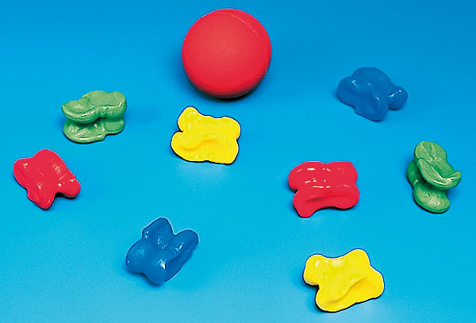
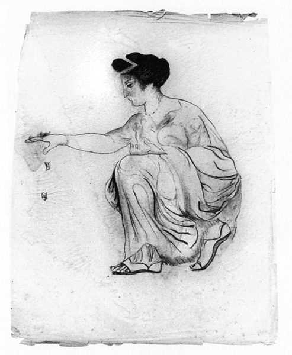
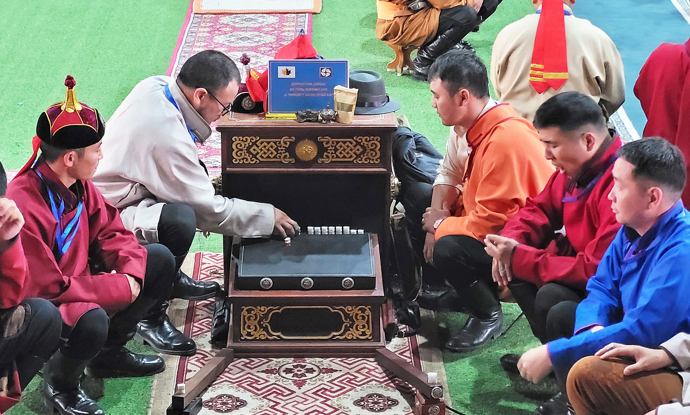
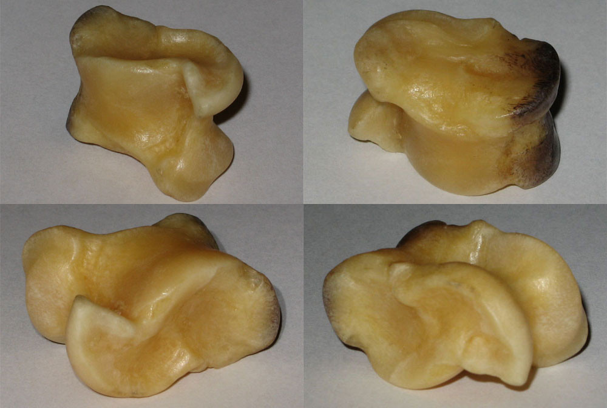
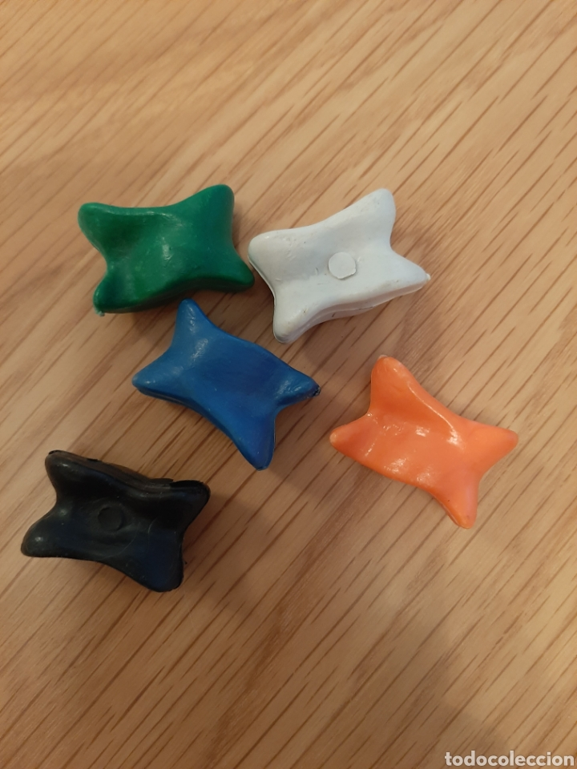

Història
Del neolític a l’escola
Permeten explicar com un objecte quotidià ha passat de contextos rituals i domèstics a usos lúdics i educatius.
Aula, llengua i patrimoni
Les tabes tenen un potencial educatiu molt alt perquè connecten patrimoni, cos, llengua, matemàtiques i cultura material en una sola experiència.
Història
Permeten explicar com un objecte quotidià ha passat de contextos rituals i domèstics a usos lúdics i educatius.
Llengua
Els noms de les cares i de les variants són excel·lents per treballar vocabulari, territori i riquesa del català.
Matemàtiques
La taba és un dau no equiprobable. Això fa possible analitzar dades reals i comparar-les amb un dau cúbic.
Aplicació didàctica

Proposta pràctica
Es pot començar amb la identificació de la peça i del seu vocabulari, continuar amb una pràctica de joc i tancar amb una activitat de probabilitat on l’alumnat registri tirades reals.
Això permet treballar coneixement històric, observació, moviment, llengua i dades en una sola seqüència coherent i atractiva.
Dimensió social
Les tabes no només serveixen per parlar d’un objecte antic. També permeten entendre com els infants aprenien a negociar regles, acceptar derrotes, gestionar conflictes i moure’s dins d’un petit sistema de rols.
Històricament hi va haver una certa divisió de gènere: les variants d’habilitat s’associaven més a nenes i les de càstig o jerarquia més a nens. Avui, en canvi, això es pot reinterpretar pedagògicament com una oportunitat per jugar-ho tot de manera compartida, crítica i sense violència.

Vocabulari
Les tabes són especialment útils a l’aula perquè permeten veure com un mateix objecte i un mateix joc adopten noms diferents segons la llengua, el territori i la variant cultural.


Lèxic de les cares i dels jocs
A més del nom general del joc, es poden treballar els noms de les cares de la taba i veure com es transformen. En català parlem de panxa, forat d’aigüera, rei i botxí; en altres llocs apareixen altres sistemes de noms i, en el cas del shagai, fins i tot animals simbòlics.
Això permet construir activitats molt clares de vocabulari, comparació lingüística, mapa dialectal i observació cultural. També encaixa molt bé amb entrevistes a avis i àvies per recuperar noms locals, regles i expressions vinculades al joc.
Variant sud-americana
Al Con Sud, la taba es juga també amb peces més grans, habitualment bovines, llançades sobre una superfície preparada de terra o fang. En alguns contextos la peça incorpora metall perquè el tir sigui més estable i més clar.
Aquesta comparació és molt valuosa a l’aula: fa veure que una mateixa idea lúdica pot derivar en jocs diferents segons el context social, el tipus d’animal i l’ús que se’n fa.

Producte final
La seqüència pot culminar en un museu virtual, una exposició escolar, un panell explicatiu, una petita mostra de jocs tradicionals o una presentació de resultats amb dades de probabilitat i vocabulari recollit.
Si es vol una alternativa més higiènica o tecnològica, també es poden comparar peces reals amb models impresos en 3D, cosa que obre el projecte a tecnologia, disseny i anàlisi de formes.
